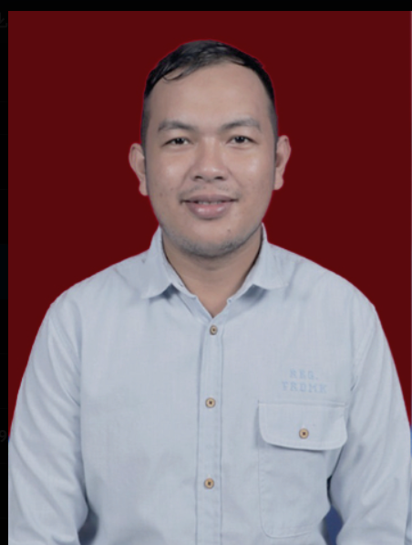

Junior IT Officer — PT Berkah Anugerah Sejahtera
Pengembangan aplikasi, hardware, jaringan, dan troubleshooting.
Samarinda, Indonesia
Saya membangun aplikasi enterprise, sistem pemerintahan, ERP, HRIS, mobile apps, AI Face Recognition, IoT, dan infrastruktur TI yang scalable.
About

Software Engineer dengan pengalaman lebih dari 10 tahun dalam pengembangan aplikasi web, mobile, enterprise system, ERP, HRIS, dan infrastruktur TI. Berpengalaman sebagai Chief Technology Officer dalam memimpin tim teknologi, merancang arsitektur sistem, deployment cloud, dan implementasi solusi digital untuk instansi pemerintah maupun perusahaan swasta.
Skills
Laravel, PHP, Python, REST API, Node.js
Vue.js, JavaScript, Bootstrap, Tailwind CSS
Flutter, Android, API Integration
MySQL, PostgreSQL, Redis
Linux, Docker, Nginx, Apache, MikroTik
DeepFace, OpenCV, ESP32, LoRa
Career
Pengembangan aplikasi, hardware, jaringan, dan troubleshooting.
Pengembangan aplikasi pemerintahan dan sistem informasi digital.
Memimpin tim teknologi, pengembangan aplikasi, ERP, dan infrastruktur.
Analisis, pengembangan, dan optimasi aplikasi berbasis web.
Portfolio
Sistem digital pengelolaan risalah, agenda, dokumen, dan pelaporan DPRD.
Enterprise Resource Planning untuk operasional, inventory, purchasing, sales, dan reporting.
Manajemen absensi, cuti, payroll, recruitment, appraisal, dan offboarding.
Sistem absensi berbasis verifikasi wajah menggunakan DeepFace dan REST API.
Aplikasi monitoring progres, persetujuan, pelaporan, dan data pekerjaan.
Aplikasi nomor antrian, pendaftaran, pemanggilan, dan monitoring real-time.
Contact
Email: fikrizufri@gmail.com
GitHub: github.com/fikrizufri
LinkedIn: linkedin.com/in/fikri-zufri-07614587